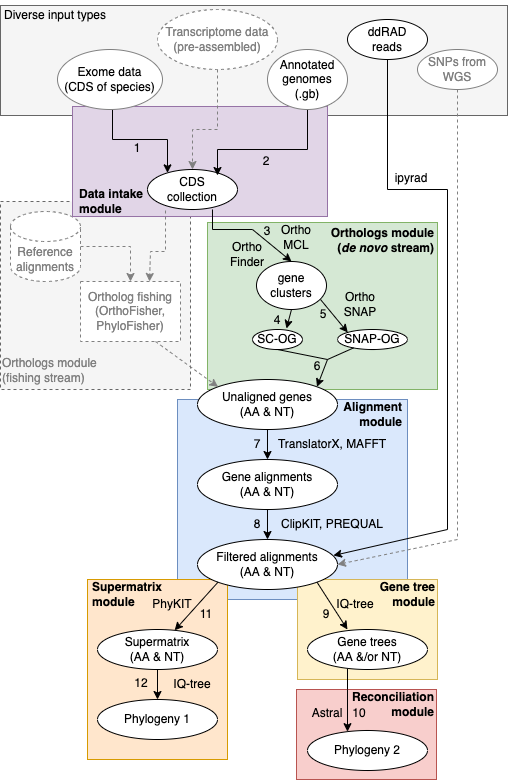

Workflow development guidelines
Diagram
Link to original on diagrams.net

User input
Brain dump of what we need for the user to provide other than a directory with data files. Definitely incomplete so please add your thoughts.
flow control
use SC-OG only, SNAP-OG only, or both combined
type of ortholog detection, with checks for adequate input (i.e. reference database for fishing)
run trees from AA or NT, I suggest not allowing both for the same run as that also affects other settings (e.g. model types)
whole series of alignment filtering options
program settings
IQtree: model (with option to carry out model selection): could use IQtree model definition syntax
IQtree: type of branch support
Data intake module
Must work from input_sources.csv file to determine which type of input the different input files represent. It produces two files for each taxon, one with CDS and one with protein sequences (translated from CDS based on genetic code).
Intake of exome data
this comes in fasta format
add taxon_string field from
input\_sources.csvwith theadd_taxon_to_seqID.pyinext_scripts, keep this outputtranslate sequences using
biokit translate(github), specifying the genetic code given ininput_sources.csv, keep output
Intake of annotated genbank files
this comes in genbank flatfile format
extract CDS features from genbank file with
gbseqextractor(github)this essentially converts the input into the exome data from point 1, so downstream processing is identical to 1 from above
add taxon_string field from
input\_sources.csv, keep this outputtranslate sequences using
biokit translate, specifying genetic code given ininput_sources.csv, keep output
Ortholog module, de novo stream
Uses the translated sequences from the data intake module, clusters them into orthogroups (gene clusters) based on pairwise similarity, then filters these down to the single copy orthogroups (SC-OG) and SNAP orthogroups (SNAP-OG). This module also includes a filtering step for occupancy, i.e. how many taxa are present in the inferred orthogroup.
Orthology inference
based on the translated CDSs, run an orthology inference program
at this stage, I would like two algorithms to be implemented here, OrthoFinder and OrthoMCL
this step is where I’d like to implement some extra alternatives later for comparative analysis
the output differs between programs, but for orthofinder, among the many outputs are the orthogroup sequences (fasta files) and phylogenetic trees (one per orthogroup)
There are too many OGs that are not phylogenetically informative (too few sequences in them – for nuclear genes many are singletons). I wrote a script
filter_OrthoFinder.pythat runs through the output directory of an OrthoFinder run and copies the OGs with more than a user-defined number of sequences to a new directory to reduce the burden of downstream processing. Ideally the minimum number of sequences is set to the occupancy threshold defined by the user.haven’t used OrthoMCL recently, so I’m not sure about the outputs it produces, so let’s put a placeholder in the workflow but implement this later
Filtering SC-OG
from the output of step 3, filter out the single copy orthogroups
I wrote the
filter_SCOG.plscript to do this. If the data input into this script are prepared withfilter_OrthoFinder.pythen it already meets the occupancy threshold given by the user.
Inferring and SNAP-OG
make this step optional, as not all users will want to use this
run the OGs that are not SC-OGs through OrthoSNAP
use the occupancy threshold given by the user
Post-orthogroup organisation
produce clean output for subsequent module
retain only taxon string in sequence ID
only protein sequences are used in ortholog module, but also need corresponding CDS
use filenames that indicate they are SC or SNAP
retain output files, important intermediary output
Alignment module
Uses the cleaned-up OG files from 7, where we have corresponding CDS and protein files. I denoted these NT (for CDS) and AA (amino acid, i.e. protein). In this module, the aim is to align the sequences and do quality filtering.
Alignment
first align the protein (amino acid) file with MAFFT
then use translatorX (http://161.111.161.41/cgi-bin/translatorx_vLocal.pl) to align the CDS using the amino acid file as a template
I wrote a snakemake rule for the MAFFT step: mafft_aa.
this will need to be updated to point to the right input and output directories
TranslatorX still to be implemented
At the end, the sequence IDs need to be trimmed down to contain just the taxon identifier and produce clean output for the next stages. I wrote “ext_scripts/seqID_taxon_only.pl” to do this and added a rule for this. We probably want this running in a conda environment to be safe but I haven’t done that.
Retain output files of both AA and NT, important intermediary output
Filtering
TBD
to be considered an optional step
the output files again exist as AA and NT, and are important intermediary output
Gene tree module
This is an important module that serves multiple purposes. One is to produce the final gene trees, but the module will probably also need to be plugged in to produce intermediary trees as part of the orthologs module, so we need to build this with flexibility in mind. The user will need to specify whether they want trees to be inferred from NT or AA data, and this flexibility needs to be programmed into this somehow. Not sure if this flexibility sits within the module itself, as that may limit the utility of this module for other purposes.
Steps TBD
Reconciliation module
TBD
Supermatrix module
PhyKIT
a file needs to be produced listing all alignment files that need to be concatenated, say this is called files.txt – I wrote a rule for this but doubt this meets proper workflow development standards
I’ve already created a conda environment for PhyKIT (envs/phykit.yaml)
Phykit command to be run from directory containing the alignments
phykit create_concat -a files.txt -p concatenatedI wrote a rule for this, which creates the 3 output files but since “concatenated” is just the prefix for those three filenames snakemake thinks it fails. Probably an easy fix but I haven’t looked into it yet.
IQtree phylogenetic inference
TBD
Reporting module
This isn’t illustrated on the workflow, but we need to provide a clean report to the user with final results, intermediate outputs, program settings etc.
I feel very strongly that this also includes a list of all the papers users should cite for appropriate acknowledgement of the software that is being used under the hood. This will differ depending on the run, but should be easy to manage.